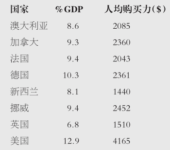

（J.S.米尔，《伦敦和威斯敏斯特评论》，1838）
1997年1月，托尼·布利摩尔曾尝试在帆迪环球航海赛中环球航行。他到达澳洲海岸以南1500英里处危险而冰冷的南大洋水域时，他的船被飓风和巨浪掀翻。他被困在船壳下四天，直到被澳大利亚国防军有史以来最大也是最贵的一次行动救起。为了拯救一条生命，一个文明社会应当准备花多少钱？回答是“不惜一切代价”，还是应该有个限度？即使尝试一次昂贵的救援行动成功机会也很小的时候呢？
让我提出一个更普遍的问题。一个人生命的现金价值是多少？这个问题令人感到不安，但矛盾的是，在有些情形下回避这个问题将会付出生命的代价，分配稀缺的医疗资源就是其中的一种情形。
图6 为了拯救一个人的生命，一个文明社会应当准备花多少钱？
世界上没有一个卫生保健体系有足够的钱能为所有的患者在所有的情况下提供可能的最好的治疗，即便那些在卫生保健上投入相对较多的国家也不能（见下表）。治疗总是在不停地得到更新和改进。在英国，平均每个月有三种新药被批准上市。几乎所有的新药相对于现有的治疗都是有益的，而且有的还能延长人们的生命。这些新药中的许多都很昂贵。何时才值得花额外的钱来获取额外的益处呢？所有的卫生保健体系都必须问这个问题，不管是像美国的“管理医疗模式”一样的私营体系，还是像英国国家健康中心一样的公共资助体系。
国家卫生支出：一些较富裕国家的例子

1998年的数据，摘自2001年经济合作与发展组织的卫生资料
如果无法总是提供最好的治疗，那么我们必须做出选择。我们有限的卫生保健资源应当如何分配？这个普遍存在的问题是医学伦理学中最重要的问题之一。我们给出的答案会影响到成千上万的生命的质量及其长短。
一些医学治疗对于延长预期寿命基本无效，但是可以改善生活质量：例如对骨关节炎患者实施髋关节置换。我们在考虑分配卫生保健资源的正确方法时所面临的一个相当难解的问题是，如何比较和评估改善生活质量和延长生命之间的相对重要性。我并不准备解决这个问题，也不准备首先解决与衡量生活质量相关的问题。我将专门探讨生命延长治疗，因为单就这些治疗进行资源分配，我们需要考虑的问题就已经够多了。生命延长治疗有许多例子。阑尾炎手术延长了生命，因为如果不做这个手术大多数病人都会死去。乳癌筛查可以延长生命，因为早期发现和治疗可以增加预期寿命。高血压增加了死于心脏病和中风的风险，降低血压的治疗降低了这个风险，尽管无法消除它。肾透析让那些肾脏已无法充分发挥作用的人得以活下去，每一年的透析就是多一年的生命。
设想你负责一个面向特定人群的卫生服务机构。你有一笔有限的预算——你负担不起所有的人在所有的时候都得到最好的治疗。你已经决定了怎样用掉你的大部分预算，但你还有几十万英镑可用于调拨。你与你的顾问们坐下来探讨使用余下这部分钱的最佳方法。有三种可能性，而你必须从中选择一种。这些可能性是：
（1）一种新的治疗肠癌的方法，可给予相关患者一个很小的却又非常重要的机会来增加预期寿命；
（2）一种新药，可降低由遗传导致的高血胆固醇患者死于心脏病的概率；
（3）一件新的手术用具，可有效降低一种特别困难的脑部手术的死亡率。
你会根据什么来在这些可能性间进行选择呢？
有一种很多人支持的方法是这样的：让一个人一年的生命优先于另一个人一年的生命是没有道理的，而让可以从肠癌治疗中受益的人相对于由遗传导致的高血胆固醇患者或脑癌患者而享有优先权也是没有道理的。每种情况下的人都会过早地死去，而每种情况下的治疗都会增加他们生存更长时间的机会。因此，我们应当做的是花钱来“购买”尽可能多的寿命年份。我们这样做公平地对待了每一个人：我们认为每一年的生命价值相等，无论其属于谁。
即使对于被这种方法吸引的人（比如我）来说，仍有一个问题需要面对：“分配问题”。让我们来看一下表中描述的三种干预措施。
在三种干预措施中选择
假设所有这些干预措施花费相同，而我们只能负担得起其中一种。进一步假设分配如下。受益于干预措施3的两个人可以每人多享有8年寿命。受益于干预措施1的十个人平均受益3.5年，范围在2至4年之间。受益于干预措施2的十五个人平均受益两年，范围在1至3年之间。我们应该支持三种干预措施中的哪一种呢？
如果我们认为我们该做的是“购买”我们所能买到的最大数量的寿命年份（最大化观点），那么我们应当将我们的钱花在干预措施1上，因为我们买到了35个寿命年份，这比我们将钱花在另两种干预措施中的任一种上得到的都要多。一些人可能会认为干预措施2更可取，因为我们帮助了更多的人（15比10），虽然每人只得到了较少的额外寿命年份。尽管如此，还会有其他人认为干预措施3是最好的选择，因为这两个受助者获得了真正明显的收益（8年寿命），而在另两种选择中没有人能获得超过四年的寿命。只有寿命年份的总数才要紧，还是这些年份在这些人中分配的方式更重要？这个问题就是“分配问题”。那些反对最大化观点的人需要详细说明他们如何在帮助更多的人却使每人受益很少与帮助更少的人却使每人受益更多之间进行取舍。除非遇到极端的情况，我一般乐于认同最大化寿命年份的总数，并不过分担心它们的分配。
我通常乐于将资源用于获得最大数量的寿命年份，但我却是一个少数派——而且世界上没有一个卫生保健体系采用我的方式。我的立场（最大化观点）中的一个问题将我们带回到了托尼·布利摩尔及其环球航行的尝试。我的立场没有赋予所谓施救准则以道德上的重要性，然而这条准则似乎直觉上就是对的。
“施救准则”与一种情形相关：一个特定的人的生命处于高度危险之中。有一种干预措施（“施救”）有很大的可能可以拯救这个人的生命。“施救准则”核心的价值观是：在此种情形下为获得一个寿命年份而花更多的钱通常比在我们无法认定谁受到帮助的情形下花钱更合理。
考虑一下卫生保健中两种假定却真实的情形。
干预措施A（救助不知名的“统计学上的”生命）
A是一种能使少数人免于过早死亡的药物。例如，一个相关组里有2000人，如果不服用A，那么100人会在随后的几年中死去。如果服用A则会死98人。虽然我们知道药物A会预防死亡的发生，但是我们并不知道哪些特定的生命会被挽救。药物A价格便宜——每获得一个寿命年份的费用是20000英镑。一个这样的例子是降低中度高血压的药物。另一个例子是一类被称为他汀类的降低血液胆固醇的药物。降低血压以及降低胆固醇可以减少心脏病、中风和死亡的风险。
干预措施B（救助一个特定的人）
B是针对一种如果不治疗就会威胁生命的病情的唯一有效治疗。如果不服用B，有这种病情的人会在接下来的一年中面临高出90的死亡率；如果服用B则有很大的治愈可能——比方说90。B很昂贵。每获得一个寿命年份的费用是50000英镑。肾透析就是其中一个例子。
干预措施A与干预措施B之间有三点可能相关的区别。第一点是B在下一年内就挽救了生命，然而A的好处在很多年后都无法体现。该不同点有一定的道德相关性。可能从干预措施A中受益的少数人会在受益前死于某个相对独立的原因。计算获得每一寿命年份的费用也存在问题，至少此干预措施的一部分费用在受益显现的前些年就已经存在了。这是由于通货膨胀。这两个结果在计算获得每一寿命年份的费用时都会被考虑到。考虑了这些情况后，似乎可以得出这一结论：在未来拯救生命与现在就拯救生命同样重要。
这两种干预措施间的第二点不同是，几乎可以肯定B能拯救相关患者的生命，而A只有一个低的概率。因此B与A相比似乎给个人带来了更大的收益。我不久就会证明这是错的。
第三点不同是，干预措施B使可以确认的人受益。干预措施A使一个群体的一部分患者受益（例如有高血压的人），但是我们无法获知这个群体中谁会受益（尽管我们可能知道受益的人所占的可能的比例）。
根据施救准则，一个卫生保健体系对干预措施B而非干预措施A投资可能是对的，即使就获得的寿命年份而言B更昂贵。例如，相对于他汀类药物的治疗，在换肾疗法上施救准则会成为为每一寿命年份花更多钱的合理理由。
在实践中，卫生保健体系正是这么做的。英国国家健康中心为获得每一寿命年份向肾透析提供50000英镑的费用，同时只为胆固醇水平非常高的人提供他汀类药物，尽管有事实表明用他汀类药物治疗中度胆固醇水平升高的人时，每获得一个寿命年份只需花费10000英镑。换句话说，如果花在做肾透析的人身上的钱换作花在某些中度胆固醇水平升高的人身上，会获得五倍的寿命年份。但我们没有这么做，因为我们会感觉到我们把需要透析的人判了死刑；而我们使用他汀类药物时所做的只是略微降低了本已很低的死亡率。
支持施救准则最有力的理由是，在特定情况下，一个特定的人（如托尼·布利摩尔）获得生存的概率极大地得到了提升，而在救助不知名的“统计学上的”生命的特定情况下，没有人期望获得至多是死亡率上的一个小小的降低。我会尽我所能使支持施救准则的论证有说服力。随后我会说说为何我不赞同它。
过早死亡通常的确是一种非常严重的伤害。但是一个非常小的过早死亡的可能性决不能算作是一个严重的伤害——我们无法表明我们需要用什么来使得过早死亡的可能性略微降低一点。我们所有人在生活中都会用过早死亡概率的小小上升来换取实际上很小的利益。让我们来考虑一下星期天早上的骑车人。
星期天早上的骑车人
星期天早上我通常会沿着我家所在的城市牛津市车水马龙的班柏里路骑车去买报纸。我这么做的同时就是将我自己置于（我希望是）额外的一点点过早死亡的风险中。我用这点额外的风险换取阅读星期天早上的报纸所带来的乐趣和收益。在权衡这两者时，我发现阅读报纸的乐趣——我生活中的一种确实非常小的乐趣——要比过早死亡的额外风险更重要。这看上去没有任何不合理的地方。一个概率非常小的可怕危害本身仅仅是一个可以因任何其他收益而轻易忽略的小小的负面影响。
图7 星期天早上的骑车人在买报纸的路上：额外的一点点死亡风险被阅读报纸的乐趣所抵消。
我们大多数人会接受这个小小的风险，不仅仅是为了我们自己的利益也是为了别人的利益。让我们来考虑一下朋友的工作申请。
朋友的工作申请
设想一位朋友正在申请一个他渴望得到的工作。为了赶在最后期限之前，申请必须今天就寄出。由于得了一次严重流感，我的朋友不能自己去寄。为了帮他，我骑车去他家取了申请然后帮他寄了。同样，我的行动增加了非常小的一点过早死亡的概率。然而帮助朋友远远超过了这点风险。
在头脑中做了这些考虑之后，我会提出一个论证，支持卫生保健体系为“施救”干预措施B付钱（例如为获得一个寿命年份花50000英镑），而拒绝为不知名的“统计学上的”干预措施A付钱（例如为获得一个寿命年份仅花20000英镑）。我会以降胆固醇药物（他汀类）作为不知名的“统计学上的”干预措施的一个例子，以肾透析作为施救干预措施的一个例子，来进行论证。
可能会从他汀类药物治疗中受益的人得到的非常少——过早死亡风险的一个非常小的降低。“朋友的工作申请”表明，即便是为了别人的利益，我们也乐意冒过早死亡发生率有小改变的风险。如果我们自己正准备从他汀类药物治疗中获益（因为我们有中度胆固醇水平升高），但我们宁愿这些钱不是为我们提供他汀类药物，而是被用来支付非做肾透析不可的人的透析费用，那么这种想法是合理的，也不是特别无私的。需要决定如何分配有限卫生保健资源的人会认为，让少数几个人活下来（这些人如果不接受治疗肯定会死）当然比让许多人的死亡率只下降一点点要好，尤其是过早死亡的风险无论怎样都相当低的时候。
回到分配问题上来
施救准则似乎是分配问题的一个特例。许多人反对最大化寿命年份的获得（支持为他汀类药物付钱）。实际上，人们的直观诉求如下：为少数人提供大的收益（延续如果不接受治疗就将死去的人的生命）比为多数人提供微不足道的收益（过早死亡率的微小降低）要好。
尽管我已经概括了施救准则强烈的直观诉求及其支持论证，但我仍然坚持我对于收益最大化的偏爱。我会通过讨论一个反例来证明我的立场：被困矿工之例。
被困矿工之例
让我们来探讨一下被困矿工的例子（见下页方框）。设想一下情况是这样的（可能并不完全现实）。救援队伍有很小的死亡的风险，且这个风险随着救援队伍的大小而变化。如果有100名救援者则每个救援者会面临1/1000的死亡可能性。如果有1000名救援者则每人会面临1/2000的死亡可能性。如果有10000名救援者则每人会面临1/5000的死亡可能性。如果有100000名救援者（一支特别大的救援队伍——但这是一个用来测试理论点的“思维实验”）则每人会面临1/10000的死亡可能性。
因此，救援队伍规模越大，每个救援者所面临的死亡风险就越小。然而情况还可以被看作是救援队伍规模越大，越多的人就有可能在救援尝试中死去。在一个100000人的救援队伍中，每个成员面临着一个非常小的死亡风险——正好在我们通常认为相对于拯救生命来说不值一提的风险范围之内。然而，对于这样一支救援队伍来说，为了营救一名被困矿工的生命，可能有约十个人会死去。
被困矿工之例
一次事故后一名矿工被困井下。如未获救援他就会死去。如果有一支足够大的救援队伍，该矿工就能得救。
花一些时间考虑一下下列问题：
1.如果你参加救援会面临一个1/10000的死亡风险，你认为你应当加入救援队伍吗？
2.在你能回答第一个问题之前，你还需要知道什么更多的关键信息吗？
如果我们假设大多数人起码在较小的程度上都是利他的，且大多数人会接受为了营救另一人的生命而要面对一个非常低的死亡风险；如果我们进一步假设，如果有选择，大多数人愿意面对尽可能低的死亡风险，那么尊重每位可能加入救援队伍的人员的意愿会带来下述结果：尽可能尊重这些人员的意愿就是要组建一支庞大的救援队伍以营救一名被困矿工——这是以许多条生命为代价的。
因此，如果施救问题被简单看作是权衡每位救援者的个体风险和被救个体的利益，那么执行一个因付出生命而总体上代价高昂的政策似乎就是对的了。
设想一位高级军官主持这次救援。如果那位军官是协调救援的，并可以预见在营救过程中死的人比能救出的人更多，那么按理说该军官会遭受指责，即使救援队伍全部是由了解并接受风险的志愿者们所组成的。他会为这次救援所造成的且已经预料到会造成的救援者比被救者死得更多的救援行动负责。即使志愿者全都知情，领导这样一次救援从道德上来看仍然是很成问题的。
图8 拯救大兵雷恩：应该用许多生命去冒险来换回一条生命吗？
更多的关键信息
让我回到就被困矿工之例提出的第二个问题上来：在你能回答第一个问题之前，你还需要知道什么更多的关键信息吗？我认为，你不仅必须了解加入救援队伍后自身面临的风险，还需要知道救援队伍的规模。因为如果救援队伍只需要10人且每名队员面临1/10000的死亡风险，那么（几乎可以肯定）就可以不牺牲生命而拯救这名矿工的生命。但是如果救援队伍需要足足100000人，那么几乎可以肯定，为了营救一名矿工会牺牲许多人。我更乐意（从道德上来看）自愿加入第一种救援队而不是第二种。
回到卫生保健上来
让我们考虑一下他汀类药物和肾透析。我们并不清楚那些可以从不知名的“统计学上的”干预措施（例如他汀类药物）中受益的人是为了可确认的患者接受昂贵的生命延长治疗而自愿放弃治疗。相比“统计学上的”治疗，为获得一个寿命年份，一个卫生保健体系在施救治疗（例如肾透析）上花费更多，这样的卫生保健体系正在有效地要求那些可能从预防性治疗中受益的人志愿加入一支进行施救治疗的“救援队伍”。鉴于有限的资源，任何一个卫生保健体系在对延长人的生命做决定的时候，都必须延长一些人的生命而以牺牲另一些人的生命为代价。在因为某个特定决定而一定会受损的这群人没有明确委托的情况下，我认为决策的核心原则必须是，我们所做的决定应当全面将所获得的寿命年份最大化。而且即使有一个明确的委托（实际上没有），正如军官领导完全知情的志愿者从事救援行动一样，一个卫生保健体系为救少数人而让更多的人死去是否正确，这依然是有疑问的。
一个与直觉相反的结论
但是我们可以接受这个结论吗？让我们回到托尼·布利摩尔以及澳大利亚国防军所实施的惊人且成功的救援。只有铁石心肠的理论家在阅读了托尼·布利摩尔的报道后才会断定发起这样一次救援是错误的。澳大利亚国防军花了纳税人数百万美元是对的。同样的道理，一个社会一年花50000英镑用肾透析维持一名患者的生命也是对的。我们怎么能袖手旁观并对患者说：我们可以让你活很多年但是我们不会为你提供必须的资金——有别人优先了。我们又怎么能把这些话说给他们悲痛的亲人们听呢？
相对于中度胆固醇水平升高患者而言，这种情况是很不一样的。不接受治疗，此人很可能并没有等到心脏病发作就死了。同样是拒绝给予治疗，我们没有判他死刑，但我们却会判需要肾透析的人死刑。
但是被困矿工之例的逻辑反驳了这一点。如果我们不向胆固醇水平升高的人提供治疗，我们就不会知道哪个特定的人会因缺少治疗而死去，也不知道谁的亲人会为此悲痛。但是我们确信会有这样的人。
拓展我们的道德想象力
那么我们怎么能做办不到的事情呢？我们从对托尼·布利摩尔或者一个肾衰竭的人的同情中认识到了什么？我认为答案并不是我们要变成铁石心肠的逻辑学家并拒绝尝试营救布利摩尔或者提供肾透析。我们的道德想象力和人道同情心被唤醒了，这是对的。我们从被困矿工之例中应当认识到的逻辑是：因为我们没有为中度胆固醇水平升高的人提供治疗，所以我们的道德想象力同样必须清醒面对生命被缩减的悲哀以及悲痛的亲人们。死亡并不会因为我们不能将一张面孔或一个名字与一个本可以被挽救的人对上号而变得不那么重要。
卫生保健是值得为之投资的。我们从对需要救治的人的同情中应当得到的教训是，我们需要拓展我们的道德想象力。我们通过准备好花钱来救治生命而对危难中的人做出正确反应。我们应当以同样的方式为防止“统计学上的”死亡而做出反应，因为死亡的是真实的人，而且他们还活着的朋友和亲人也同样沉浸在悲痛中。